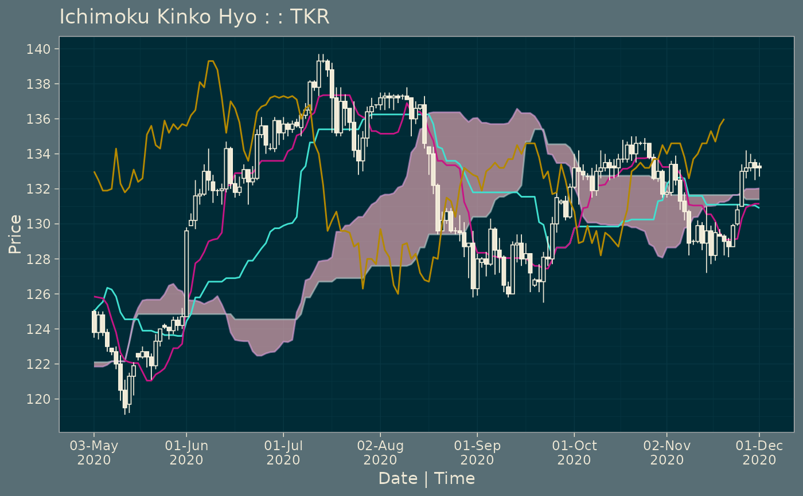

Plot static or interactive Ichimoku Kinko Hyo cloud charts from ichimoku objects.
# S3 method for ichimoku plot(x, i = FALSE, from, to, ticker, theme = "default", gaps = FALSE, ...)
Arguments
| x | an object of class 'ichimoku'. |
|---|---|
| i | interactive parametmer set to FALSE by default. Set to TRUE to plot an interactive rather than a static chart. |
| from | (optional) a starting date/time to subset the plot. |
| to | (optional) an ending date/time to subset the plot. |
| ticker | (optional) specify a ticker, or other text, to include in the chart heading. If not set, the ticker saved within the ichimoku object will be used. |
| theme | with a default of 'default'. This can also be set to 'dark' or 'solarized' to select the desired colour scheme. |
| gaps | set to FALSE by default to remove weekend and holiday gaps. Set to TRUE for a continuous timescale axis, but with gaps for non-trading days. |
| ... | other arguments to be passed along. |
Value
Returns either a ggplot2 object with classes 'gg' and 'ggplot', or a plotly object with classes 'plotly' and 'htmlwidget' depending on the parameters set.
Details
This function is an S3 method for the generic function plot() for class 'ichimoku'. It can be invoked by calling plot(x) on an object 'x' of class 'ichimoku'.
Further Details
Please refer to the reference vignette by running:
vignette("reference", package = "ichimoku")
Examples
